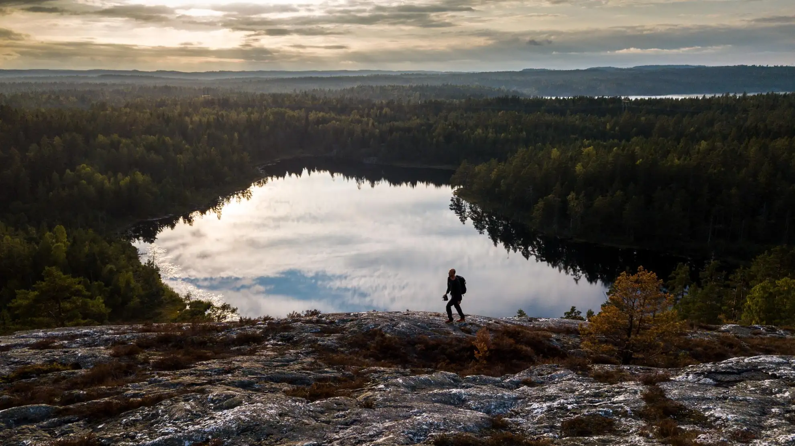
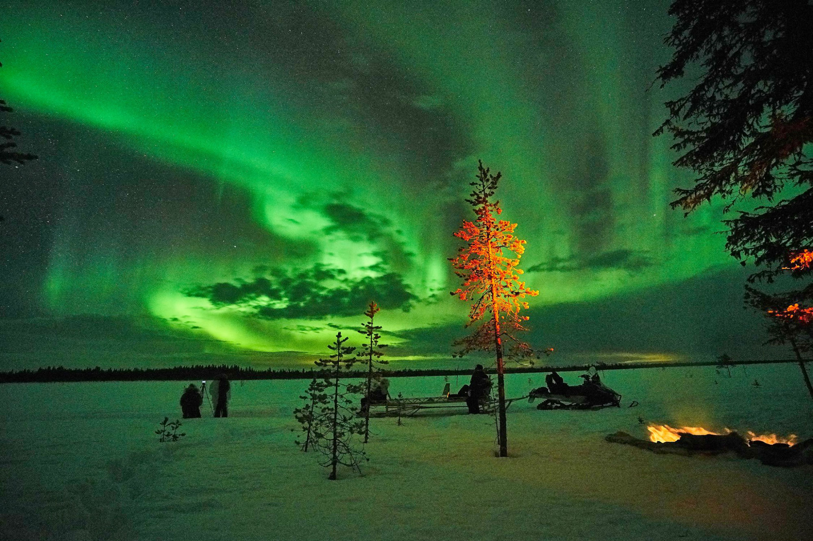

Welcome to Sweden

Sweden is known for its breathtaking nature, rich history, and modern innovation. From the northern lights in Lapland to the vibrant city life in Stockholm, Sweden offers something for everyone.
ExploreExperience the stunning beauty of the Swedish countryside, with its endless forests, lakes, and wildlife.
Visit Stockholm, the capital of Sweden, where history meets modernity in a breathtaking way.

Witness the magical Northern Lights in the Arctic region of Sweden, an unforgettable natural wonder.
Explore the archipelago of Stockholm, a serene landscape of thousands of islands in the Baltic Sea.

Discover the medieval town of Visby on Gotland Island, a UNESCO World Heritage site with a rich history.

Experience the Swedish winter in the ski resorts of Åre, perfect for skiing, snowboarding, and winter activities.

Sweden has a rich cultural heritage that blends the old and the new. From its Viking past to modern-day innovations, the country offers a variety of experiences for everyone.
Swedish cuisine is renowned for its simplicity and use of fresh, local ingredients. Dishes like meatballs, herring, and crispbread are staples.

Swedish architecture combines modern design with traditional styles, from minimalist homes to grand castles and palaces.